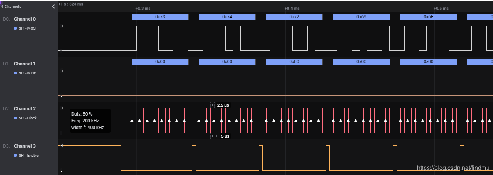
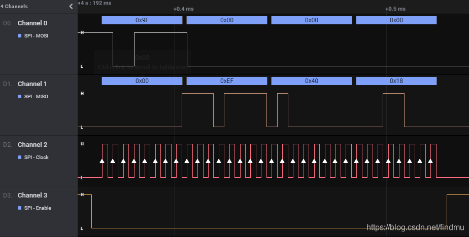
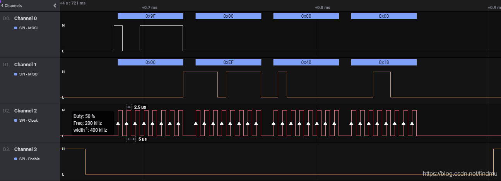
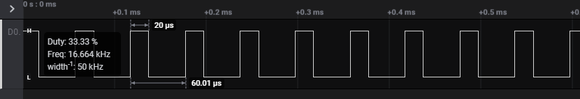
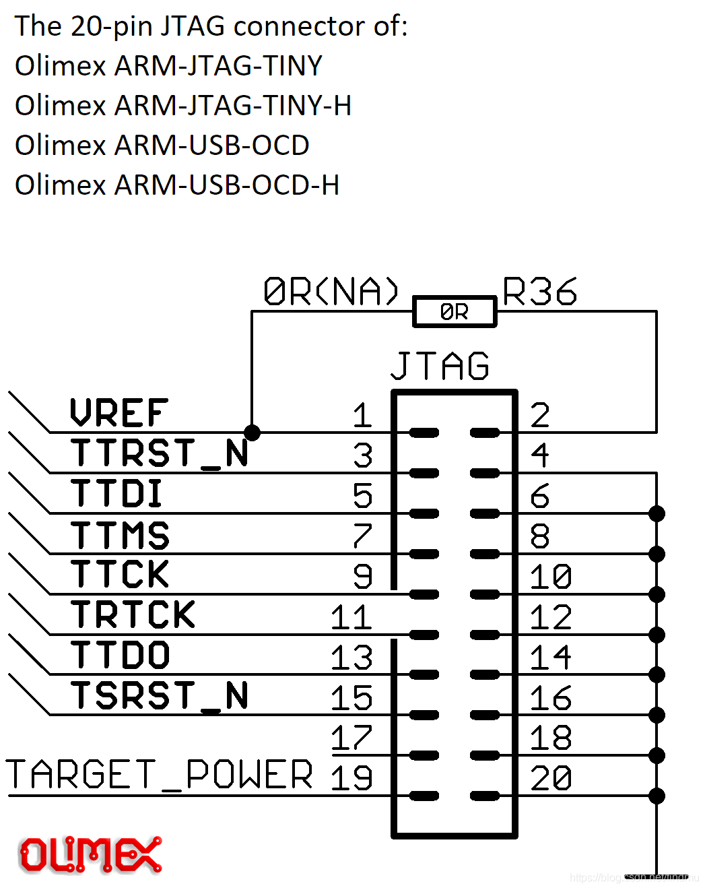
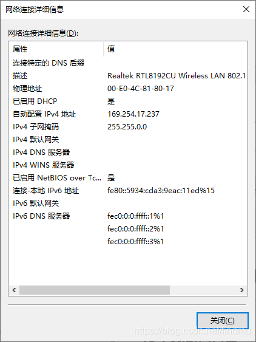

BeagleV测试
一、测试环境
硬件：
BeagleV
软件：
kernel: 4.19.0-sifive-1
BusyBox v1.29.3 (2021-02-05 19:37:29 CST) multi-call binary.
主机：
VirtualBox6.1
Ubuntu 20.04.1
二、测试概述
| 项目 | BeagleV | 树莓派Pi4 | 备注 |
|---|---|---|---|
| Ethernet | Tx:301Mbps Rx:285Mbps | Tx:840Mbps Rx:837Mbps | \ |
| USB Host | A:67.7MB/s B:71.6MB/s C:65.8MB/s D:74.3MB/s |
A:35.6 MB/s B:35.7 MB/s C:310 MB/s D:302 MB/s |
\ |
| SD Card | ① 读取速度：4.58MB/s ② T卡烧录、启动系统 |
45.1 MB/s | Pi4有缓存机制，BeagleV没有 |
| GPIO | GPIO0~GPIO27 输入输出正常 | – | \ |
| UART | Rx、Tx正常 | – | \ |
| I2C | 可读写i2c设备 | – | \ |
| SPI | 回环ok，spi flash测试ok | spi flash测试ok | ① Pi4有2组spi，BeagleV只有1组; ② spi clock频率不对; |
| PWM | 有波形输出，但存在问题 | – | 更新参数后，波形会停止输出，过很长一段时间波形才再次输出 |
| JTAG | 测试成功 | – | 成功烧写bootloader和ddrinit文件 |
| HDMI | 测试失败 | 显示ok | ① 7寸：u-boot白屏，kernel黑屏； ② AOC：提示输入不支持；③ LG：不显示； ④ dell：terminal可以正常显示，但偶尔花屏； ⑤ BeagleBone与BeagleV使用同型号HDMI芯片， |
| BT | 设备连接成功 | 可以扫描设备，并完成配对。 | |
| WIFI STA | TCP Tx:14.0Mbps Rx:12.7Mbps UDP Tx:20.6Mbps Tx:16.4Mbps |
– | 网速较慢 |
| WIFI AP | 可以连接，可ping通 | – | \ |
| DSI+CSI0/1 | 可显示，但存在问题 | – | 第三方5寸屏可显示（但颜色不对）， 树莓派官方7寸屏无法显示 |
| HDMI+CSI0/1 | 可显示，但颜色异常 | – | CSI0和CSI1存在同样的问题：显示颜色非常暗且发绿 |
| DSP | 测试成功 | – | 测试文档：《xrp_test_doc.doc》 |
| Audio | 测试成功 | - | 测试固件：fw_vic.bin.out |
| CPU跑分 | Dhrystones: 2500000 |
Dhrystones : 9090909 | \ |
问题总结：
- Ethernet速度BeagleV比树莓派慢；
- USB Host读取移动硬盘速度BeagleV比树莓派慢；
- SD Card读取速度BeagleV比树莓派慢；
- SPI的设置频率与实际输出频率不一致；
- PWM更新参数后，波形会停止输出，
过很长一段时间波形才会再次输出； - 编译报错：Ubuntu 20.04.1下编译报错。lmde-4也经常编译报错；
- HDMI测试，
目前只有dell显示器可以显示terminal（ 存在花屏的问题）； - HDMI+CSI0/1：显示颜色非常暗且发绿；
三、测试方法
1. Ethernet
测试工具：iperf3
# HOST - vbox虚拟机
sudo iperf3 -s -p 1000
BeagleV测试结果：
# iperf3 -c 192.168.4.156 -p 1000
Connecting to host 192.168.4.156, port 1000
[ 5] local 192.168.4.177 port 32944 connected to 192.168.4.156 port 1000
[ ID] Interval Transfer Bitrate Retr Cwnd
[ 5] 0.00-1.02 sec 39.8 MBytes 329 Mbits/sec 0 195 KBytes
[ 5] 1.02-2.03 sec 40.0 MBytes 331 Mbits/sec 0 198 KBytes
[ 5] 2.03-3.01 sec 15.6 MBytes 133 Mbits/sec 0 208 KBytes
[ 5] 3.01-4.01 sec 26.0 MBytes 219 Mbits/sec 0 215 KBytes
[ 5] 4.01-5.02 sec 40.0 MBytes 330 Mbits/sec 1 223 KBytes
[ 5] 5.02-6.00 sec 38.8 MBytes 332 Mbits/sec 1 226 KBytes
[ 5] 6.00-7.02 sec 40.0 MBytes 329 Mbits/sec 0 233 KBytes
[ 5] 7.02-8.00 sec 38.8 MBytes 332 Mbits/sec 0 242 KBytes
[ 5] 8.00-9.01 sec 40.0 MBytes 333 Mbits/sec 1 242 KBytes
[ 5] 9.01-10.02 sec 40.0 MBytes 333 Mbits/sec 0 247 KBytes
- - - - - - - - - - - - - - - - - - - - - - - - -
[ ID] Interval Transfer Bitrate Retr
[ 5] 0.00-10.02 sec 359 MBytes 301 Mbits/sec 3 sender
[ 5] 0.00-10.56 sec 358 MBytes 285 Mbits/sec receiver
iperf Done.
树莓派Pi4测试结果：
pi@raspberrypi:~ $ sudo iperf3 -c 192.168.4.156 -p 1000
Connecting to host 192.168.4.156, port 1000
[ 5] local 192.168.4.58 port 44438 connected to 192.168.4.156 port 1000
[ ID] Interval Transfer Bitrate Retr Cwnd
[ 5] 0.00-1.00 sec 58.1 MBytes 487 Mbits/sec 1 563 KBytes
[ 5] 1.00-2.00 sec 111 MBytes 932 Mbits/sec 0 731 KBytes
[ 5] 2.00-3.00 sec 110 MBytes 922 Mbits/sec 14 595 KBytes
[ 5] 3.00-4.00 sec 110 MBytes 925 Mbits/sec 0 642 KBytes
[ 5] 4.00-5.00 sec 112 MBytes 937 Mbits/sec 0 676 KBytes
[ 5] 5.00-6.00 sec 110 MBytes 921 Mbits/sec 0 708 KBytes
[ 5] 6.00-7.00 sec 112 MBytes 936 Mbits/sec 0 742 KBytes
[ 5] 7.00-8.00 sec 111 MBytes 927 Mbits/sec 32 577 KBytes
[ 5] 8.00-9.00 sec 58.4 MBytes 490 Mbits/sec 1 677 KBytes
[ 5] 9.00-10.00 sec 110 MBytes 923 Mbits/sec 54 375 KBytes
- - - - - - - - - - - - - - - - - - - - - - - - -
[ ID] Interval Transfer Bitrate Retr
[ 5] 0.00-10.00 sec 1001 MBytes 840 Mbits/sec 102 sender
[ 5] 0.00-10.01 sec 999 MBytes 837 Mbits/sec receiver
iperf Done.
2. USB host
测试设备：
[ 4870.720000] usb 2-1.4: new SuperSpeed Gen 1 USB device number 5 using xhci-hcd
[ 4870.760000] usb 2-1.4: New USB device found, idVendor=2109, idProduct=0715, bcdDevice=f0.00
[ 4870.780000] usb 2-1.4: New USB device strings: Mfr=1, Product=2, SerialNumber=3
[ 4870.790000] usb 2-1.4: Product: VLI Product String
[ 4870.800000] usb 2-1.4: Manufacturer: VLI Manufacture String
[ 4870.810000] usb 2-1.4: SerialNumber: 000000123C05
[ 4870.830000] scsi host0: uas
[ 4871.750000] scsi 0:0:0:0: Direct-Access KINGSHAR KS-AMTU3C 2210 PQ: 0 ANSI: 6
[ 4871.770000] sd 0:0:0:0: [sda] 250069680 512-byte logical blocks: (128 GB/119 GiB)
[ 4871.790000] sd 0:0:0:0: [sda] Write Protect is off
[ 4871.800000] sd 0:0:0:0: [sda] Mode Sense: 2f 00 00 00
[ 4871.820000] sd 0:0:0:0: [sda] Write cache: enabled, read cache: enabled, doesn't support DPO or FUA
[ 4871.840000] sda: sda1
[ 4871.860000] sd 0:0:0:0: [sda] Attached SCSI disk
BeagleV测试结果：
端口A：
# time dd if=/dev/sda1 of=/dev/null bs=512k count=5000
5000+0 records in
5000+0 records out
real 0m 36.81s
user 0m 0.05s
sys 0m 33.91s
# 512*5000/1024/36.91 = 67.7MB/s
端口B：
# time dd if=/dev/sda1 of=/dev/null bs=512k count=5000
5000+0 records in
5000+0 records out
real 0m 34.91s
user 0m 0.03s
sys 0m 31.07s
# 512*5000/1024/34.91 = 71.6MB/s
端口C：
# time dd if=/dev/sda1 of=/dev/null bs=512k count=5000
5000+0 records in
5000+0 records out
real 0m 38.00s
user 0m 0.05s
sys 0m 34.63s
# 512*5000/1024/38.00 = 65.8MB/s
端口D：
# time dd if=/dev/sda1 of=/dev/null bs=512k count=5000
5000+0 records in
5000+0 records out
real 0m 33.65s
user 0m 0.01s
sys 0m 29.52s
# 512*5000/1024/33.65 = 74.3MB/s
Pi4测试结果：
端口A：
pi@raspberrypi:~ $ time sudo dd if=/dev/sda1 of=/dev/null bs=512k count=5000
5000+0 records in
5000+0 records out
2621440000 bytes (2.6 GB, 2.4 GiB) copied, 73.64 s, 35.6 MB/s
real 1m13.668s
user 0m0.022s
sys 0m10.513s
端口B：
pi@raspberrypi:~ $ time sudo dd if=/dev/sda1 of=/dev/null bs=512k count=5000
5000+0 records in
5000+0 records out
2621440000 bytes (2.6 GB, 2.4 GiB) copied, 73.4091 s, 35.7 MB/s
real 1m13.434s
user 0m0.061s
sys 0m10.330s
端口C：
pi@raspberrypi:~ $ time sudo dd if=/dev/sda1 of=/dev/null bs=512k count=5000
5000+0 records in
5000+0 records out
2621440000 bytes (2.6 GB, 2.4 GiB) copied, 8.46882 s, 310 MB/s
real 0m8.489s
user 0m0.010s
sys 0m6.025s
端口D：
pi@raspberrypi:~ $ time sudo dd if=/dev/sda1 of=/dev/null bs=512k count=5000
5000+0 records in
5000+0 records out
2621440000 bytes (2.6 GB, 2.4 GiB) copied, 8.69142 s, 302 MB/s
real 0m8.713s
user 0m0.029s
sys 0m6.196s
3. SD Card
3.1 速度测试
BeagleV测试结果：
# time dd if=/dev/mmcblk0p1 of=/dev/null bs=512k count=5000
512+0 records in
512+0 records out
real 0m 55.89s
user 0m 0.01s
sys 0m 2.24s
# 256MB/55.89s = 4.58MB/s
# time dd if=/dev/mmcblk0p1 of=/dev/null bs=512k count=5000
512+0 records in
512+0 records out
real 0m 55.89s
user 0m 0.00s
sys 0m 2.06s
Pi4测试结果：
pi@raspberrypi:~ $ time sudo dd if=/dev/mmcblk0p1 of=/dev/null bs=512k count=5000
512+0 records in
512+0 records out
268435456 bytes (268 MB, 256 MiB) copied, 6.00996 s, 44.7 MB/s
real 0m6.088s
user 0m0.029s
sys 0m0.895s
pi@raspberrypi:~ $ time sudo dd if=/dev/mmcblk0p1 of=/dev/null bs=512k count=5000
512+0 records in
2+0 records out
268435456 bytes (268 MB, 256 MiB) copied, 0.331688 s, 809 MB/s
real 0m0.372s
user 0m0.012s
sys 0m0.355s
3.2 T卡启动测试
烧写镜像到T卡
lmde@vb:/work/sf/beagle_freedeom_u_sdk$ sudo make DISK=/dev/sdc format-nvdla-disk
/sbin/sgdisk --clear \
--new=1:4096:269502 --change-name=1:"Vfat Boot" --typecode=1:EBD0A0A2-B9E5-4433-87C0-68B6B72699C7 \
--new=2:2048:4048 --change-name=2:uboot --typecode=2:5B193300-FC78-40CD-8002-E86C45580B47 \
--new=3:542004:0 --change-name=3:root --typecode=3:0FC63DAF-8483-4772-8E79-3D69D8477DE4 \
/dev/sdc
Caution: invalid backup GPT header, but valid main header; regenerating
backup header from main header.
Warning! Main and backup partition tables differ! Use the 'c' and 'e' options
on the recovery & transformation menu to examine the two tables.
Warning! One or more CRCs don't match. You should repair the disk!
****************************************************************************
Caution: Found protective or hybrid MBR and corrupt GPT. Using GPT, but disk
verification and recovery are STRONGLY recommended.
****************************************************************************
Setting name!
partNum is 0
Setting name!
partNum is 1
Information: Moved requested sector from 542004 to 540672 in
order to align on 2048-sector boundaries.
Setting name!
partNum is 2
Warning: The kernel is still using the old partition table.
The new table will be used at the next reboot or after you
run partprobe(8) or kpartx(8)
The operation has completed successfully.
/sbin/partprobe
Error: The backup GPT table is corrupt, but the primary appears OK, so that will be used.
dd if=/work/sf/beagle_freedeom_u_sdk/work/HiFive_U-Boot/u-boot.bin of=/dev/sdc2 bs=4096
134+1 records in
134+1 records out
551831 bytes (552 kB, 539 KiB) copied, 0.255097 s, 2.2 MB/s
dd if=/work/sf/beagle_freedeom_u_sdk/work/hifive-unleashed-vfat.part of=/dev/sdc1 bs=4096
32931+1 records in
32931+1 records out
134888448 bytes (135 MB, 129 MiB) copied, 32.1162 s, 4.2 MB/s
系统正常启动
U-Boot 2018.09-gff75401 (Feb 26 2021 - 11:48:14 +0800)
DRAM: 2 GiB
MMC: VIC DWMMC0: 0
In: serial
Out: serial
Err: serial
Net: dwmac.10020000
Hit any key to stop autoboot: 0
Partition Map for MMC device 0 -- Partition Type: EFI
Part Start LBA End LBA Name
Attributes
Type GUID
Partition GUID
1 0x00001000 0x00041cbe "Vfat Boot"
attrs: 0x0000000000000000
type: ebd0a0a2-b9e5-4433-87c0-68b6b72699c7
type: data
guid: afc1fd03-3f7e-4610-9e68-10c2d8a45ddb
2 0x00000800 0x00000fd0 "uboot"
attrs: 0x0000000000000000
type: 5b193300-fc78-40cd-8002-e86c45580b47
guid: ab375f36-26f4-4af2-9ffb-b1c24ad75188
3 0x00084000 0x03e7ffde "root"
attrs: 0x0000000000000000
type: 0fc63daf-8483-4772-8e79-3d69d8477de4
type: linux
guid: bf0ad4aa-8baa-4771-8c0b-7ab4f103f677
2144 bytes read in 4 ms (523.4 KiB/s)
running boot2...
32724902 bytes read in 7221 ms (4.3 MiB/s)
4. GPIO
测试方法：
cd /sys/class/gpio
# FNSH009_RPI_GPIO0输出:
echo 9 > export
echo out > gpio9/direction
echo 1 > gpio9/value # 万用表测量电压3.3v
echo 0 > gpio9/value # 万用表测量电压0v
# FNSH009_RPI_GPIO0输入:
echo in > gpio9/direction
# FNSH009_RPI_GPIO0接到高VCC_3V3：
cat gpio9/value
1
# FNSH009_RPI_GPIO0接到GND:
cat gpio9/value
0
测试结果：
GPIO0~GPIO27 按照上面方法测试，结果均正常。
5. I2C
测试器件：光感LS9800
调整GPIO与树莓派保持一致：
beagle_freedeom_u_sdk/HiFive_
scl-gpio = <&gpio 47 0>;
sda-gpio = <&gpio 48 0>;
测试结果：
# i2cdetect -y -r 1
0 1 2 3 4 5 6 7 8 9 a b c d e f
00: -- -- -- -- -- -- -- -- -- -- -- -- --
10: -- -- -- -- -- -- -- -- -- -- -- -- -- -- -- --
20: -- -- -- -- -- -- -- -- -- -- -- -- -- -- -- --
30: -- -- -- -- -- -- -- -- -- -- -- -- -- -- -- --
40: -- -- -- -- -- -- -- -- -- -- -- -- -- -- -- --
50: -- -- -- -- 54 -- -- -- -- -- -- -- -- -- -- --
60: -- -- -- -- -- -- -- -- -- -- -- -- -- -- -- --
70: -- -- -- -- -- -- -- --
i2cget -y 1 0x54 0x00
0x00
i2cset -y 1 0x54 0x00 0x03
i2cget -y 1 0x54 0x00
0x03
6. SPI
BeagleV一组：SPI2(2路CE)
树莓派有两组：SPI0(2路CE)、SPI1(3路CE)

修改源码：
// HiFive_U-Boot/board/SiFive/HiFive-U74/HiFive-U74.c
INIT_FUNC_DEF(spi2)
{
//SET_SPI_GPIO(2,18,16,12,15);
SET_SPI_GPIO(2,18,16,12,11);
}
编译测试工具：spidev_test
cd beagle_freedeom_u_sdk\linux\tools\spi
../../../work/buildroot_initramfs/host/bin/riscv64-linux-gcc spidev_test.c -o spidev_test
tftp -l spidev_test -r spidev_test -g 192.168.4.55
chmod +x spidev_test
BeagleV回环测试（短接Pin19和Pin21）：
./spidev_test -D /dev/spidev1.0 -v -p string_to_send
spi mode: 0x0
bits per word: 8
max speed: 500000 Hz (500 KHz)
TX | 73 74 72 69 6E 67 5F 74 6F 5F 73 65 6E 64 __ __ __ __ __ __ __ __ __ __ __ __ __ __ __ __ __ __ | string_to_send
RX | 73 74 72 69 6E 67 5F 74 6F 5F 73 65 6E 64 __ __ __ __ __ __ __ __ __ __ __ __ __ __ __ __ __ __ | string_to_send
#

BeagleV spiflash测试：
# ./spidev_test -H -D /dev/spidev1.0 -v -p \\x9f\\x00\\x00\\x00
spi mode: 0x1
bits per word: 8
max speed: 500000 Hz (500 KHz)
TX | 9F 00 00 00 __ __ __ __ __ __ __ __ __ __ __ __ __ __ __ __ __ __ __ __ __ __ __ __ __ __ __ __ |
RX | 00 EF 40 18 __ __ __ __ __ __ __ __ __ __ __ __ __ __ __ __ __ __ __ __ __ __ __ __ __ __ __ __ | .
#

树莓派Pi4 spiflash测试：
pi@raspberrypi:/work/seeed/spitest $ ./spidev_test -D /dev/spidev0.0 -v -p \\x9f\\x00\\x00\\x00
spi mode: 0x4
bits per word: 8
max speed: 500000 Hz (500 KHz)
TX | 9F 00 00 00 __ __ __ __ __ __ __ __ __ __ __ __ __ __ __ __ __ __ __ __ __ __ __ __ __ __ __ __ | ▒...
RX | 00 EF 40 18 __ __ __ __ __ __ __ __ __ __ __ __ __ __ __ __ __ __ __ __ __ __ __ __ __ __ __ __ | .▒@.

7. PWM
修改源码：
// HiFive_U-Boot/board/SiFive/HiFive-U74/vic_ptc.c
void ptc_pinmux_init(uint32_t num)
{
uint32_t i = 0;
#if defined(VIC_EVB_V1)
if(num == 0) /* GPIOB33 */
{
SET_GPIO_5_dout_pwm_pad_out_bit0;
SET_GPIO_5_doen_LOW;
while(0)
{
SET_GPIO_5_dout_LOW;
for(i=0; i<100; i++) ;
SET_GPIO_5_dout_HIGH;
}
}else if(num == 1)
// HiFive_U-Boot/board/SiFive/HiFive-U74/HiFive-U74.c
int board_hw_init(void)
{
--- // INIT_FUNC_CALL(ptc);
+++ INIT_FUNC_CALL(ptc);
}
测试方法：
逻辑分析仪CH1分别连接下面引脚进行测试：
FNSH005_RPI_GPIO13
FNSH007_RPI_GPIO12
FNSH045_RP_GPIO18
cd /sys/class/pwm/pwmchip0/
echo 0 > export
cd pwm0/
echo 60000 > period
echo 20000 > duty_cycle
BeagleV PWM输出波形：

8. JTAG

按照《FreedomSDK安装手册_01.pdf》
9. BT 测试
hciconfig hci0 up
bluetoothctl
[bluetooth]# scan on
Discovery started
[CHG] Controller 10:2C:6B:A9:6E:FF Discovering: yes
[NEW] Device 0B:4E:E2:53:E6:10 RAPOO BT4.0 Mouse
[CHG] Device 56:7A:72:AF:D6:AB RSSI: -72
[bluetooth]# pair 0B:4E:E2:53:E6:10
Attempting to pair with 0B:4E:E2:53:E6:10
[bluetooth]# trust 0B:4E:E2:53:E6:10
[CHG] Device 0B:4E:E2:53:E6:10 Trusted: yes
Changing 0B:4E:E2:53:E6:10 trust succeeded
[bluetooth]# connect 0B:4E:E2:53:E6:10
Attempting to connect to 0B:4E:E2:53:E6:10
[RAPOO BT4.0 Mouse]# info
Device 0B:4E:E2:53:E6:10 (public)
Name: RAPOO BT4.0 Mouse
Alias: RAPOO BT4.0 Mouse
Appearance: 0x03c2
Icon: input-mouse
Paired: yes
Trusted: yes
Blocked: no
Connected: yes
LegacyPairing: no
UUID: Generic Access Profile (00001800-0000-1000-8000-00805f9b34fb)
UUID: Generic Attribute Profile (00001801-0000-1000-8000-00805f9b34fb)
UUID: Device Information (0000180a-0000-1000-8000-00805f9b34fb)
UUID: Battery Service (0000180f-0000-1000-8000-00805f9b34fb)
UUID: Human Interface Device (00001812-0000-1000-8000-00805f9b34fb)
Modalias: usb:v000Ep3412d6701
10. wifi测试
测试条件：
荣耀路由器X2 - 2.4G
虚拟机lmde-4 + 300Mbps USB 无线网卡
10.1 STA模式
修改代码：
$ make buildroot_initramfs-menuconfig
Target packages --->
Networking applications --->
[*] wpa_supplicant
[*] Enable nl80211 support
[*] Enable AP mode
[*] Enable WPS
[*] Install wpa_cli binary
[*] Install wpa_client shared library
测试步骤：
ifconfig wlan0 up
# cat /etc/wpa_supplicant.conf
ctrl_interface=/var/run/wpa_supplicant
network={
ssid="qunanan"
psk="wdrqgbsj"
}
wpa_supplicant -Dnl80211 -i wlan0 -c /etc/wpa_supplicant.conf -d&
udhcpc -i wlan0
ifconfig
wlan0 Link encap:Ethernet HWaddr 10:2C:6B:A9:6E:FE
inet addr:10.0.0.145 Bcast:10.0.0.255 Mask:255.255.255.0
inet6 addr: fe80::122c:6bff:fea9:6efe/64 Scope:Link
UP BROADCAST RUNNING MULTICAST MTU:1500 Metric:1
RX packets:6 errors:0 dropped:0 overruns:0 frame:0
TX packets:16 errors:0 dropped:0 overruns:0 carrier:0
collisions:0 txqueuelen:1000
RX bytes:1024 (1.0 KiB) TX bytes:1908 (1.8 KiB)
HOST - vbox虚拟机
sudo iperf3 -s -p 1000
10.1.1 板载天线
wlan0: New scan results available (own=1 ext=0)
wlan0: Radio work 'scan'@0xae920 done in 1.156932 seconds
wlan0: radio_work_free('scan'@0xae920) : num_active_works --> 0
wlan0: Selecting BSS from priority group 0
wlan0: 0: 8c:de:f9:e2:f9:ba ssid='STU-EE' wpa_ie_len=0 rsn_ie_len=20 caps=0x431 level=-41 freq=2437 wps
wlan0: skip - SSID mismatch
wlan0: 1: a0:ec:f9:9f:41:31 ssid='seeed-guest' wpa_ie_len=0 rsn_ie_len=20 caps=0x1431 level=-42 freq=2427
wlan0: skip - SSID mismatch
wlan0: 2: a0:ec:f9:9f:41:30 ssid='SEEED-MKT' wpa_ie_len=0 rsn_ie_len=20 caps=0x1431 level=-43 freq=2427
wlan0: skip - SSID mismatch
wlan0: 3: 00:90:4c:1e:50:50 ssid='MIG-Meeting' wpa_ie_len=0 rsn_ie_len=20 caps=0x1411 level=-44 freq=2432 wps
wlan0: skip - SSID mismatch
wlan0: 4: ce:c2:e0:32:fd:c6 ssid='ChinaNet-wQDu' wpa_ie_len=26 rsn_ie_len[ 116.250000] [dhd-wlan0] wl_cfg80211_connect : 1
[ 116.250000]
=24 caps=0x411 level=-48 freq=2412
wlan0: skip - SSID mismatch
wlan0: 5: 34:2e:b6:70:2a:25 ssid='' wpa_ie_len=0 rsn_ie_len=20 caps=0x1431 level=-48 freq=2462 wps
wlan0: skip - SSID not known
wlan0: 6: a0:63:91:c7:f4:8f ssid='WWNet' wpa_ie_len=0 rsn_ie_len=20 caps=0x1011 level=-49 freq=2417 wps
wlan0: skip - SSID mismatch
wlan0: 7: 34:2e:b6:70:2a:24 ssid='se.101_24G' wpa_ie_len=0 rsn_ie_len=20 caps=0x1431 level=-49 freq=2462 wps
wlan0: selected based on RSN IE
wlan0: selected BSS 34:2e:b6:70:2a:24 ssid='se.101_24G'
wlan0: Considering connect request: reassociate: 0 selected: 34:2e:b6:70:2a:24 bssid: 00:00:00:00:00:00 pending: 00:00:)
wlan0: Request association with 34:2e:b6:70:2a:24
wlan0: No ongoing scan/p2p-scan found to abort
wlan0: Add radio work 'connect'@0xae920
wlan0: First radio work item in the queue - schedule start immediately
# iperf3 -c 10.0.0.144 -p 1000
Connecting to host 10.0.0.144, port 1000
[ 5] local 10.0.0.145 port 54814 connected to 10.0.0.144 port 1000
[ ID] Interval Transfer Bitrate Retr Cwnd
[ 5] 0.00-1.01 sec 898 KBytes 7.30 Mbits/sec 0 69.3 KBytes
[ 5] 1.01-2.01 sec 382 KBytes 3.13 Mbits/sec 2 41.0 KBytes
[ 5] 2.01-3.01 sec 764 KBytes 6.25 Mbits/sec 4 33.9 KBytes
[ 5] 3.01-4.01 sec 382 KBytes 3.13 Mbits/sec 2 29.7 KBytes
[ 5] 4.01-5.01 sec 382 KBytes 3.13 Mbits/sec 1 25.5 KBytes
[ 5] 5.01-6.01 sec 382 KBytes 3.13 Mbits/sec 0 35.4 KBytes
[ 5] 6.01-7.01 sec 191 KBytes 1.56 Mbits/sec 2 29.7 KBytes
[ 5] 7.01-8.01 sec 573 KBytes 4.69 Mbits/sec 0 39.6 KBytes
[ 5] 8.01-9.01 sec 573 KBytes 4.69 Mbits/sec 1 38.2 KBytes
[ 5] 9.01-10.01 sec 573 KBytes 4.69 Mbits/sec 0 46.7 KBytes
- - - - - - - - - - - - - - - - - - - - - - - - -
[ ID] Interval Transfer Bitrate Retr
[ 5] 0.00-10.01 sec 4.98 MBytes 4.17 Mbits/sec 12 sender
[ 5] 0.00-10.12 sec 4.57 MBytes 3.79 Mbits/sec receiver
iperf Done.
# iperf3 -u -c 10.0.0.144 -p 1000 -b 1000M
Connecting to host 10.0.0.144, port 1000
[ 5] local 10.0.0.145 port 44196 connected to 10.0.0.144 port 1000
[ ID] Interval Transfer Bitrate Total Datagrams
[ 5] 0.00-1.01 sec 1.26 MBytes 10.5 Mbits/sec 910
[ 5] 1.01-2.01 sec 1.00 MBytes 8.40 Mbits/sec 725
[ 5] 2.01-3.01 sec 1.08 MBytes 9.06 Mbits/sec 782
[ 5] 3.01-4.01 sec 714 KBytes 5.85 Mbits/sec 505
[ 5] 4.01-5.00 sec 918 KBytes 7.54 Mbits/sec 649
[ 5] 5.00-6.01 sec 1.06 MBytes 8.86 Mbits/sec 767
[ 5] 6.01-7.01 sec 1.31 MBytes 11.0 Mbits/sec 948
[ 5] 7.01-8.01 sec 1.12 MBytes 9.41 Mbits/sec 812
[ 5] 8.01-9.01 sec 1.32 MBytes 11.1 Mbits/sec 956
[ 5] 9.01-10.01 sec 1.44 MBytes 12.1 Mbits/sec 1044
- - - - - - - - - - - - - - - - - - - - - - - - -
[ ID] Interval Transfer Bitrate Jitter Lost/Total Datagrams
[ 5] 0.00-10.01 sec 11.2 MBytes 9.38 Mbits/sec 0.000 ms 0/8098 (0%) sender
[ 5] 0.00-10.41 sec 5.32 MBytes 4.28 Mbits/sec 3.414 ms 4248/8097 (52%) receiver
iperf Done.
路由器放旁边
# iperf3 -c 10.1.1.152 -p 1000
Connecting to host 10.1.1.152, port 1000
[ 5] local 10.1.1.198 port 46742 connected to 10.1.1.152 port 1000
[ ID] Interval Transfer Bitrate Retr Cwnd
[ 5] 0.00-1.00 sec 1.70 MBytes 14.2 Mbits/sec 0 100 KBytes
[ 5] 1.00-2.00 sec 1.30 MBytes 10.9 Mbits/sec 0 154 KBytes
[ 5] 2.00-3.00 sec 1.86 MBytes 15.6 Mbits/sec 0 240 KBytes
[ 5] 3.00-4.00 sec 1.86 MBytes 15.6 Mbits/sec 0 324 KBytes
[ 5] 4.00-5.00 sec 2.05 MBytes 17.2 Mbits/sec 1 269 KBytes
[ 5] 5.00-6.00 sec 1.49 MBytes 12.5 Mbits/sec 0 297 KBytes
[ 5] 6.00-7.00 sec 1.55 MBytes 13.0 Mbits/sec 3 222 KBytes
[ 5] 7.00-8.00 sec 1.37 MBytes 11.5 Mbits/sec 0 243 KBytes
[ 5] 8.00-9.00 sec 2.05 MBytes 17.2 Mbits/sec 2 129 KBytes
[ 5] 9.00-10.00 sec 1.43 MBytes 12.0 Mbits/sec 0 144 KBytes
- - - - - - - - - - - - - - - - - - - - - - - - -
[ ID] Interval Transfer Bitrate Retr
[ 5] 0.00-10.00 sec 16.7 MBytes 14.0 Mbits/sec 6 sender
[ 5] 0.00-10.12 sec 15.4 MBytes 12.7 Mbits/sec receiver
iperf Done.
#
# iperf3 -u -c 10.1.1.152 -p 1000 -b 1000M
Connecting to host 10.1.1.152, port 1000
[ 5] local 10.1.1.198 port 54850 connected to 10.1.1.152 port 1000
[ ID] Interval Transfer Bitrate Total Datagrams
[ 5] 0.00-1.00 sec 2.44 MBytes 20.3 Mbits/sec 1764
[ 5] 1.00-2.00 sec 2.21 MBytes 18.6 Mbits/sec 1603
[ 5] 2.00-3.00 sec 2.42 MBytes 20.3 Mbits/sec 1751
[ 5] 3.00-4.00 sec 2.11 MBytes 17.8 Mbits/sec 1528
[ 5] 4.00-5.00 sec 956 KBytes 7.83 Mbits/sec 676
[ 5] 5.00-6.00 sec 1.81 MBytes 15.1 Mbits/sec 1311
[ 5] 6.00-7.00 sec 1.89 MBytes 15.9 Mbits/sec 1369
[ 5] 7.00-8.00 sec 3.61 MBytes 30.4 Mbits/sec 2615
[ 5] 8.00-9.00 sec 3.72 MBytes 31.3 Mbits/sec 2697
[ 5] 9.00-10.00 sec 3.43 MBytes 28.8 Mbits/sec 2482
- - - - - - - - - - - - - - - - - - - - - - - - -
[ ID] Interval Transfer Bitrate Jitter Lost/Total Datagrams
[ 5] 0.00-10.00 sec 24.6 MBytes 20.6 Mbits/sec 0.000 ms 0/17796 (0%) sender
[ 5] 0.00-10.79 sec 21.1 MBytes 16.4 Mbits/sec 0.694 ms 2517/17794 (14%) receiver
iperf Done.
10.1.1 外置天线
wlan0: New scan results available (own=1 ext=0)
wlan0: Radio work 'scan'@0xae920 done in 1.149694 seconds
wlan0: radio_work_free('scan'@0xae920) : num_active_works --> 0
wlan0: Selecting BSS from priority group 0
wlan0: 0: 8c:de:f9:e2:f9:ba ssid='STU-EE' wpa_ie_len=0 rsn_ie_len=20 caps=0x431 level=-29 freq=2437 wps
wlan0: skip - SSID mismatch
wlan0: 1: a0:ec:f9:9f:41:31 ssid='seeed-guest' wpa_ie_len=0 rsn_ie_len=20 caps=0x1431 level=-39 freq=2427
wlan0: skip - SSID mismatch
wlan0: 2: a0:ec:f9:9f:41:30 ssid='SEEED-MKT' wpa_ie_len=0 rsn_ie_len=20 caps=0x1431 level=-42 freq=2427
wlan0: skip - SSID mismatch
wlan0: 3: a0:63:91:c7:f4:8f ssid='WWNet' wpa_ie_len=0 rsn_ie_len=20 caps=0x1011 level=-46 freq=2417 wps
wlan0: skip - SSID mismatch
wlan0: 4: 00:90:4c:1e:50:50 ssid='MIG-Meeting' wpa_ie_len=0 rsn_ie_len=20 caps=0x1411 level=-48 freq=2432 wps
wlan[ 60.590000] [dhd-wlan0] wl_cfg80211_connect : Connecting with 34:2e:b6:70:2a:24 ssid "se.101_24G", len (10), sec=wp1
[ 60.590000]
0: skip - SSID mismatch
wlan0: 5: ec:17:2f:f2:d8:58 ssid='seeed_test_2g' wpa_ie_len=0 rsn_ie_len=20 caps=0x411 level=-49 freq=2412
wlan0: skip - SSID mismatch
wlan0: 6: 20:76:93:44:8f:ba ssid='LaowaiNet2G' wpa_ie_len=0 rsn_ie_len=20 caps=0x431 level=-49 freq=2417
wlan0: skip - SSID mismatch
wlan0: 7: 94:83:c4:05:c3:d2 ssid='qunanan' wpa_ie_len=0 rsn_ie_len=20 caps=0x11 level=-53 freq=2462
wlan0: skip - SSID mismatch
wlan0: 8: 34:2e:b6:70:2a:24 ssid='se.101_24G' wpa_ie_len=0 rsn_ie_len=20 caps=0x1431 level=-53 freq=2462 wps
wlan0: selected based on RSN IE
wlan0: selected BSS 34:2e:b6:70:2a:24 ssid='se.101_24G'
wlan0: Considering connect request: reassociate: 0 selected: 34:2e:b6:70:2a:24 bssid: 00:00:00:00:00:00 pending: 00:00:)
wlan0: Request association with 34:2e:b6:70:2a:24
wlan0: No ongoing scan/p2p-scan found to abort
wlan0: Add radio work 'connect'@0xae920
wlan0: First radio work item in the queue - schedule start immediately
RSN: Ignored PMKID candidate without preauth flag
wlan0: Starting radio work 'connect'@0xae920 after 0.000108 second wait
wlan0: Trying to associate with SSID 'se.101_24G'
wlan0: Cancelling scan request
wlan0: WPA: clearing own WPA/RSN IE
# iperf3 -c 10.1.1.152 -p 1000
Connecting to host 10.1.1.152, port 1000
[ 5] local 10.1.1.174 port 34270 connected to 10.1.1.152 port 1000
[ ID] Interval Transfer Bitrate Retr Cwnd
[ 5] 0.00-1.01 sec 1.47 MBytes 12.2 Mbits/sec 0 99.0 KBytes
[ 5] 1.01-2.01 sec 1.49 MBytes 12.5 Mbits/sec 0 160 KBytes
[ 5] 2.01-3.01 sec 1.80 MBytes 15.1 Mbits/sec 0 232 KBytes
[ 5] 3.01-4.01 sec 2.36 MBytes 19.8 Mbits/sec 0 327 KBytes
[ 5] 4.01-5.01 sec 891 KBytes 7.30 Mbits/sec 1 281 KBytes
[ 5] 5.01-6.02 sec 2.67 MBytes 22.2 Mbits/sec 0 311 KBytes
[ 5] 6.02-7.01 sec 827 KBytes 6.84 Mbits/sec 0 341 KBytes
[ 5] 7.01-8.01 sec 1.62 MBytes 13.6 Mbits/sec 0 362 KBytes
[ 5] 8.01-9.01 sec 1.55 MBytes 13.0 Mbits/sec 0 375 KBytes
[ 5] 9.01-10.01 sec 1.55 MBytes 13.0 Mbits/sec 1 264 KBytes
- - - - - - - - - - - - - - - - - - - - - - - - -
[ ID] Interval Transfer Bitrate Retr
[ 5] 0.00-10.01 sec 16.2 MBytes 13.6 Mbits/sec 2 sender
[ 5] 0.00-10.19 sec 14.9 MBytes 12.3 Mbits/sec receiver
iperf Done.
#
# iperf3 -c 10.1.1.152 -p 1000 -b 1000M
Connecting to host 10.1.1.152, port 1000
[ 5] local 10.1.1.174 port 34274 connected to 10.1.1.152 port 1000
[ ID] Interval Transfer Bitrate Retr Cwnd
[ 5] 0.00-1.00 sec 1.60 MBytes 13.4 Mbits/sec 0 107 KBytes
[ 5] 1.00-2.00 sec 1.50 MBytes 12.5 Mbits/sec 0 175 KBytes
[ 5] 2.00-3.00 sec 1.75 MBytes 14.7 Mbits/sec 2 161 KBytes
[ 5] 3.00-4.00 sec 1.25 MBytes 10.5 Mbits/sec 0 194 KBytes
[ 5] 4.00-5.00 sec 1.50 MBytes 12.6 Mbits/sec 0 214 KBytes
[ 5] 5.00-6.00 sec 1.50 MBytes 12.6 Mbits/sec 1 157 KBytes
[ 5] 6.00-7.00 sec 1.38 MBytes 11.5 Mbits/sec 2 122 KBytes
[ 5] 7.00-8.00 sec 1.38 MBytes 11.5 Mbits/sec 0 137 KBytes
[ 5] 8.00-9.00 sec 1.62 MBytes 13.6 Mbits/sec 0 143 KBytes
[ 5] 9.00-10.00 sec 1.62 MBytes 13.7 Mbits/sec 0 144 KBytes
- - - - - - - - - - - - - - - - - - - - - - - - -
[ ID] Interval Transfer Bitrate Retr
[ 5] 0.00-10.00 sec 15.1 MBytes 12.7 Mbits/sec 5 sender
[ 5] 0.00-10.15 sec 14.3 MBytes 11.9 Mbits/sec receiver
iperf Done.
10.2 AP模式
echo -n "/etc/firmware/fw_bcm43436b0_apsta.bin" > /sys/module/bcmdhd/parameters/firmware_path
修改文件：/etc/hostapd.conf
interface=wlan0
driver=nl80211
ctrl_interface=/var/run/hostapd
ssid=AndroidAP
channel=6
ieee80211n=1
hw_mode=g
ignore_broadcast_ssid=0
wpa=2
rsn_pairwise=CCMP
wpa_passphrase=12345678
cd /etc/
hostapd hostapd.conf &
# Configuration file: hostapd.conf
rfkill: Cannot open RFKILL control device
[ 112.620000] [dhd-wlan0] wl_cfg80211_del_station : Disconnect STA : 66:66:3a:66:66:3a scb_val.val 3
Using interface wlan0 with hwaddr 10:2c:6b:a9:6e:fe and ssid "AndroidAP"
random: Only 15/20 bytes of strong random data available from /d[ 112.740000] [dhd] dhd_wl_ioctl_set_intiovar: set int io3
ev/random
random: Not enough entropy pool available for secure [ 112.750000] [dhd] dhd_ndo_enable: failed to enabe ndo to 0, retcod3
operations
WPA: Not enough entropy in random pool for secure op[ 112.760000] [dhd] CFG80211-ERROR) wl_cfg80211_start_ap : Disabling 3
erations - update keys later when the first station connects
[ 112.780000] [dhd-wlan0] wl_cfg80211_set_channel : netdev_ifidx(4), chan_type(1) target channel(6)
[ 112.800000] [dhd] CFG80211-ERROR) wl_cfg80211_parse_ies : No WPSIE in beacon
[ 112.810000] [dhd] CFG80211-ERROR) wl_cfg80211_parse_ies : No WPSIE in beacon
[ 112.820000] [dhd-wlan0] wl_cfg80211_bcn_bringup_ap : Creating AP with sec=wpa2psk/mfpn/0x44
[ 112.910000] [dhd-wlan0] wl_ext_iapsta_event : [A] Link up w/o creating? (etype=16)
[ 112.910000] [dhd-wlan0] wl_notify_connect_status_ap : AP/GO Link up
[ 112.930000] [dhd-wlan0] wl_ext_iapsta_event : [A] Link up w/o creating? (etype=16)
wlan0: interface state UNINITIALIZED->ENABLED
wlan0: AP-ENABLED
ifconfig
wlan0 Link encap:Ethernet HWaddr 10:2C:6B:A9:6E:FE
inet addr:169.254.136.232 Bcast:169.254.255.255 Mask:255.255.0.0
inet6 addr: fe80::38f6:5845:147:e764/64 Scope:Link
UP BROADCAST RUNNING MULTICAST MTU:1500 Metric:1
RX packets:0 errors:0 dropped:0 overruns:0 frame:0
TX packets:23 errors:0 dropped:0 overruns:0 carrier:0
collisions:0 txqueuelen:1000
RX bytes:0 (0.0 B) TX bytes:3538 (3.4 KiB)


ping 169.254.17.237
PING 169.254.17.237 (169.254.17.237): 56 data bytes
64 bytes from 169.254.17.237: seq=0 ttl=128 time=16.306 ms
64 bytes from 169.254.17.237: seq=1 ttl=128 time=11.510 ms
64 bytes from 169.254.17.237: seq=2 ttl=128 time=11.897 ms
64 bytes from 169.254.17.237: seq=3 ttl=128 time=14.034 ms
64 bytes from 169.254.17.237: seq=4 ttl=128 time=14.554 ms
64 bytes from 169.254.17.237: seq=5 ttl=128 time=11.487 ms
64 bytes from 169.254.17.237: seq=6 ttl=128 time=14.114 ms
64 bytes from 169.254.17.237: seq=7 ttl=128 time=11.546 ms
^C
--- 169.254.17.237 ping statistics ---
8 packets transmitted, 8 packets received, 0% packet loss
round-trip min/avg/max = 11.487/13.181/16.306 ms
11. DSI测试
液晶屏：树莓派官方7寸屏，分辨率：800x480
Camera：Raspberry Pi Camera V2.1
11.1 显示Terminal
修改代码：
lmde@vb:/work/sf/beagle_freedeom_u_sdk/linux$ git diff
diff --git a/drivers/video/fbdev/starfive/starfive_fb.c b/drivers/video/fbdev/starfive/starfive_fb.c
index 91f91d444..6cfd7ad21 100755
--- a/drivers/video/fbdev/starfive/starfive_fb.c
+++ b/drivers/video/fbdev/starfive/starfive_fb.c
@@ -1069,7 +1069,8 @@ static int starfive_fb_probe(struct platform_device *pdev)
return ret;
}
- sf_dev->dis_dev_name = "tda_998x_1080p";
+ //sf_dev->dis_dev_name = "tda_998x_1080p";
+ sf_dev->dis_dev_name = "seeed_5_inch";
sf_dev->cmap_inverse = 0;
sf_dev->cmap_static = 0;
sf_dev->dev = &pdev->dev;
① 测试第三方屏
log信息：
[ 0.560000] clocksource: Switched to clocksource riscv_clocksource
[ 0.560000] seeed_panel 2-0045: seeed_panel_probe[167],reg[0x80] = 0xc3
[ 0.580000] [MIPI]: imx219_probe enter
[ 1.350000] imx219_read_reg:write reg error:reg=0,valrtn=-121
[ 1.360000] imx219_read_reg:write reg error:reg=1,valrtn=-121
[ 1.360000] [MIPI]: raspi_cam_v2 failed to power up!
[ 1.370000] [MIPI]: failed to open sensor

② 测试官方屏
log信息：
[ 0.560000] clocksource: Switched to clocksource riscv_clocksource
[ 0.560000] seeed_panel 2-0045: seeed_panel_probe[167],reg[0x80] = 0xc3
[ 0.600000] seeed_panel 2-0045: seeed panel i2c read reg(0x82 val:0xc3) failed,ret = -121 !
[ 0.600000] seeed_panel 2-0045: seeed panel i2c write reg(0x81 val:0x4) failed !
[ 0.620000] [MIPI]: imx219_probe enter
[ 1.390000] imx219_read_reg:write reg error:reg=0,valrtn=-121
[ 1.400000] imx219_read_reg:write reg error:reg=1,valrtn=-121
[ 1.400000] [MIPI]: raspi_cam_v2 failed to power up!
[ 1.410000] [MIPI]: failed to open sensor
[ 1.410000] NET: Registered protocol family 2
[ 1.420000] tcp_listen_portaddr_hash hash table entries: 4096 (order: 4, 65536 bytes)

11.2 CSI0（J1接口）
修改代码：
lmde@vb:/work/sf/beagle_freedeom_u_sdk/HiFive_U-Boot$ git diff
diff --git a/arch/riscv/dts/hifive_u74_nvdla_iofpga.dts b/arch/riscv/dts/hifive_u74_nvdla_iofpga.dts
index 6abc008..1e26844 100755
--- a/arch/riscv/dts/hifive_u74_nvdla_iofpga.dts
+++ b/arch/riscv/dts/hifive_u74_nvdla_iofpga.dts
@@ -357,6 +357,12 @@
compatible = "seeed_panel";
reg = <0x45>;
};
+
+ imx219@10 {
+ compatible = "imx219";
+ reg = <0x10>;
+ reset-gpio = <&gpio 57 0>;
+ };
};
trng: trng@118d0000 {
@@ -607,7 +613,7 @@
status = "okay";
ddr-format = <WIN_FMT_RGB565>;/*LCDC win_format*/
- /*pp1 {
+ pp1 {
pp-id = <1>;
fifo-out;
src-format = <COLOR_YUV420_NV21>;
@@ -616,7 +622,7 @@
dst-format = <COLOR_RGB888_ARGB>;
dst-width = <800>;
dst-height = <480>;
- };*/
+ };
};
vin_sysctl:vin_sysctl@19800000 {
lmde@vb:/work/sf/beagle_freedeom_u_sdk/linux$ git diff
diff --git a/drivers/video/fbdev/starfive/starfive_fb.c b/drivers/video/fbdev/starfive/starfive_fb.c
index 91f91d444..81e635604 100755
--- a/drivers/video/fbdev/starfive/starfive_fb.c
+++ b/drivers/video/fbdev/starfive/starfive_fb.c
@@ -1041,7 +1041,7 @@ static int sf_fb_parse_dt(struct device *dev, struct sf_fb_data *sf_dev) {
return ret;
}
-//#define FB_BUFF_VIN
+#define FB_BUFF_VIN
static int starfive_fb_probe(struct platform_device *pdev)
{
@@ -1069,7 +1069,8 @@ static int starfive_fb_probe(struct platform_device *pdev)
return ret;
}
- sf_dev->dis_dev_name = "tda_998x_1080p";
+ //sf_dev->dis_dev_name = "tda_998x_1080p";
+ sf_dev->dis_dev_name = "seeed_5_inch";
sf_dev->cmap_inverse = 0;
sf_dev->cmap_static = 0;
sf_dev->dev = &pdev->dev;

11.3 CSI1（J2接口）
修改代码：
vin_sysctl:vin_sysctl@19800000 {
@@ -642,6 +648,7 @@
frame-height =<480>;
isp0_enable;
csi-lane = <2>;
+ #if 0
csi-dlane-swaps = /bits/ 8 <1>,/bits/ 8 <2>,/bits/ 8 <3>,/bits/ 8 <4>;
csi-dlane-pn-swaps = /bits/ 8 <0>,/bits/ 8 <0>,/bits/ 8 <0>,/bits/ 8 <0>;
csi-clane-swap = /bits/ 8 <0>;
@@ -650,7 +657,16 @@
csi-width = <1920>;
csi-height = <1080>;
csi-dt = <0x2b>;
-
+ #else
+ csi-dlane-swaps = /bits/ 8 <3>,/bits/ 8 <4>,/bits/ 8 <1>,/bits/ 8 <2>;
+ csi-dlane-pn-swaps = /bits/ 8 <1>,/bits/ 8 <0>,/bits/ 8 <0>,/bits/ 8 <0>;
+ csi-clane-swap = /bits/ 8 <5>;
+ csi-clane-pn-swap = /bits/ 8 <0>;
+ csi-mipiID = <0>;
+ csi-width = <1920>;
+ csi-height = <1080>;
+ csi-dt = <0x2b>;
+ #endif
};

12. HDMI测试
12.1 显示Terminal
- 树莓派7寸显示器、AOC显示器、LG显示器均不能正常显示。
- DELL显示器可以显示控制台，但是存在花屏的问题。
12.2 CSI0（J1接口）
修改代码：
lmde@vb:/work/sf/beagle_freedeom_u_sdk/HiFive_U-Boot$ git diff
diff --git a/arch/riscv/dts/hifive_u74_nvdla_iofpga.dts b/arch/riscv/dts/hifive_u74_nvdla_iofpga.dts
index 49b3fbc..ddce1eb 100755
--- a/arch/riscv/dts/hifive_u74_nvdla_iofpga.dts
+++ b/arch/riscv/dts/hifive_u74_nvdla_iofpga.dts
@@ -592,16 +592,16 @@
status = "okay";
ddr-format = <WIN_FMT_RGB565>;/*LCDC win_format*/
- /*pp1 {
+ pp1 {
pp-id = <1>;
fifo-out;
src-format = <COLOR_YUV420_NV21>;
- src-width = <800>;
- src-height = <480>;
+ src-width = <1920>;
+ src-height = <1080>;
dst-format = <COLOR_RGB888_ARGB>;
- dst-width = <800>;
- dst-height = <480>;
- };*/
+ dst-width = <1920>;
+ dst-height = <1080>;
+ };
};
vin_sysctl:vin_sysctl@19800000 {
@@ -623,8 +623,8 @@
/*defaule config for imx219 vin&isp*/
format = <SRC_CSI2RX_VIN_ISP>;
- frame-width = <800>;
- frame-height =<480>;
+ frame-width = <1920>;
+ frame-height =<1080>;
isp0_enable;
csi-lane = <2>;
csi-dlane-swaps = /bits/ 8 <1>,/bits/ 8 <2>,/bits/ 8 <3>,/bits/ 8 <4>;
lmde@vb:/work/sf/beagle_freedeom_u_sdk/linux$ git diff
diff --git a/drivers/video/fbdev/starfive/starfive_fb.c b/drivers/video/fbdev/starfive/starfive_fb.c
index 91f91d444..06c28510d 100755
--- a/drivers/video/fbdev/starfive/starfive_fb.c
+++ b/drivers/video/fbdev/starfive/starfive_fb.c
@@ -1041,7 +1041,7 @@ static int sf_fb_parse_dt(struct device *dev, struct sf_fb_data *sf_dev) {
return ret;
}
-//#define FB_BUFF_VIN
+#define FB_BUFF_VIN
static int starfive_fb_probe(struct platform_device *pdev)
{
显示效果：

12.3 CSI1（J2接口）
修改代码：
lmde@vb:/work/sf/beagle_freedeom_u_sdk/HiFive_U-Boot$ git diff
diff --git a/arch/riscv/dts/hifive_u74_nvdla_iofpga.dts b/arch/riscv/dts/hifive_u74_nvdla_iofpga.dts
index 49b3fbc..5e8a596 100755
--- a/arch/riscv/dts/hifive_u74_nvdla_iofpga.dts
+++ b/arch/riscv/dts/hifive_u74_nvdla_iofpga.dts
@@ -315,6 +315,12 @@
compatible = "seeed_panel";
reg = <0x45>;
};
+
+ imx219@10 {
+ compatible = "imx219";
+ reg = <0x10>;
+ reset-gpio = <&gpio 58 0>;
+ };
};
@@ -623,10 +629,11 @@
/*defaule config for imx219 vin&isp*/
format = <SRC_CSI2RX_VIN_ISP>;
- frame-width = <800>;
- frame-height =<480>;
+ frame-width = <1920>;
+ frame-height =<1080>;
isp0_enable;
csi-lane = <2>;
+#if 0
csi-dlane-swaps = /bits/ 8 <1>,/bits/ 8 <2>,/bits/ 8 <3>,/bits/ 8 <4>;
csi-dlane-pn-swaps = /bits/ 8 <0>,/bits/ 8 <0>,/bits/ 8 <0>,/bits/ 8 <0>;
csi-clane-swap = /bits/ 8 <0>;
@@ -635,7 +642,16 @@
csi-width = <1920>;
csi-height = <1080>;
csi-dt = <0x2b>;
-
+#else
+ csi-dlane-swaps = /bits/ 8 <3>,/bits/ 8 <4>,/bits/ 8 <1>,/bits/ 8 <2>;
+ csi-dlane-pn-swaps = /bits/ 8 <1>,/bits/ 8 <0>,/bits/ 8 <0>,/bits/ 8 <0>;
+ csi-clane-swap = /bits/ 8 <5>;
+ csi-clane-pn-swap = /bits/ 8 <0>;
+ csi-mipiID = <0>;
+ csi-width = <1920>;
+ csi-height = <1080>;
+ csi-dt = <0x2b>;
+#endif
显示效果:

13. DSP测试
tftp -l vp6_elf -r vp6_elf -g 192.168.4.55
tftp -l xrp.ko -r xrp.ko -g 192.168.4.55
tftp -l xrp-host-hosted -r xrp-host-hosted -g 192.168.4.55
ls -l
total 1488
-rw-r--r-- 1 root root 580662 Jan 1 00:05 vp6_elf
-rw-r--r-- 1 root root 66936 Jan 1 00:05 xrp-host-hosted
-rw-r--r-- 1 root root 868816 Jan 1 00:05 xrp.ko
cp vp6_elf /lib/firmware/
chmod +x xrp-host-hosted
insmod xrp.ko
[ 505.500000] Call xrp init common
[ 505.500000] --init_hw: regs = 0x00000000124b0000/76b0000
[ 505.510000] xrp f0000000.xrp: init_hw: device IRQ MMIO host src0 = 0x00000013, src1 = 0x00000013, device IRQ = 19, IRQ 1
[ 505.530000] xrp f0000000.xrp: init_hw: host IRQ = 23,
[ 505.540000] xrp f0000000.xrp: hw init end: 0 1
[ 505.550000] init_flags:1
[ 505.550000] xrp f0000000.xrp: define __kernel__
[ 505.560000] xrp_init_common: comm = 0x0000001072000000/000000000c8d4094
[ 505.570000] xrp_init_common: xvp->pmem = 0x0000001072001000
[ 505.580000] xrp f0000000.xrp: xrp_init_address_map: na = 1, pna = 2, ns = 1, rlen = 8 cells, n = 2
[ 505.590000] xrp f0000000.xrp: src_addr = 0x40000000, dst_addr = 0x40000000, size = 0x1000000
[ 505.600000] xrp f0000000.xrp: src_addr = 0x1070000000, dst_addr = 0xb0000000, size = 0x3000000
[ 505.620000] vp6 halt.
[ 505.620000] vp6 initialise end.
[ 505.630000] xrp f0000000.xrp: xrp_firmware_find_symbol: found symbol, st_shndx = 18, sh_offset = 0x0000c8c0, sh_addr = 2
[ 505.660000] xrp f0000000.xrp: xrp_firmware_fixup_symbol: value pointed to by symbol is incorrect: 00 00 00 b2
[ 505.670000] xrp f0000000.xrp: loading segment 6 (device 0xb0000000) to physical 0x0000001070000000
[ 505.690000] xrp f0000000.xrp: loading segment 7 (device 0xb0000400) to physical 0x0000001070000400
[ 505.700000] xrp f0000000.xrp: loading segment 8 (device 0xb0000580) to physical 0x0000001070000580
[ 505.720000] xrp f0000000.xrp: loading segment 9 (device 0xb00005c0) to physical 0x00000010700005c0
[ 505.740000] xrp f0000000.xrp: loading segment 10 (device 0xb0000600) to physical 0x0000001070000600
[ 505.750000] xrp f0000000.xrp: loading segment 11 (device 0xb0000640) to physical 0x0000001070000640
[ 505.770000] xrp f0000000.xrp: loading segment 12 (device 0xb0000680) to physical 0x0000001070000680
[ 505.790000] xrp f0000000.xrp: loading segment 13 (device 0xb00006c0) to physical 0x00000010700006c0
[ 505.810000] xrp f0000000.xrp: loading segment 14 (device 0xb0000700) to physical 0x0000001070000700
[ 505.830000] xrp f0000000.xrp: loading segment 15 (device 0xb0000740) to physical 0x0000001070000740
[ 505.850000] xrp f0000000.xrp: loading segment 16 (device 0xb00007c0) to physical 0x00000010700007c0
[ 505.870000] xrp f0000000.xrp: loading segment 17 (device 0xb000cbc0) to physical 0x000000107000cbc0
[ 505.890000] xrp f0000000.xrp: loading segment 18 (device 0xb2000000) to physical 0x0000001072000000
[ 505.910000] vp6 begin run.
[ 505.930000] send_irq: trigger
[ 505.940000] vic_irq_handler recv irq ...
[ 505.950000] xrp f0000000.xrp: xrp_irq_handler
[ 505.960000] xrp f0000000.xrp: completing queue 0
./xrp-host-hosted
===================communication===========================[ 681.590000] xvp_open
input data:
[ 681.600000] xrp_fill_hw_request: cmd for DSP: 000000000c8d4094: 00 00 00 00 08 00 00 00 08 00 00 00 00 00 00 00 03 03 00
3,3,3,3,3,3,3,3,
[ 681.640000] send_irq: trigger
[ 681.640000] xrp f0000000.xrp: run irq mode.
[ 681.650000] vic_irq_handler recv irq ...
[ 681.660000] xrp f0000000.xrp: xrp_irq_handler
[ 681.670000] xrp f0000000.xrp: completing queue 0
output data[ 681.680000] xvp_close
5,5,5,5,5,5,5,5,
======================finish==== ===========================
14. Audio
烧写镜像 fw_vic.bin.out 到u-boot分区，然后启动：
1、选择菜单“21: test pwmdac”
2、选择菜单“0: pwmadc play audio by fifo”
用耳机可以听到左右两边均有声音。